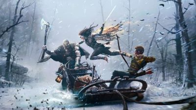

God of War: Ragnarök is an action game and the sequel to God of War (2018). It is the ninth installment in the series and concludes the Norse era. The game is set in ancient Scandinavia and once again features series protagonist, Kratos, and his now teenage son, Atreus. It covers Ragnarök, the eschatological event which is central to Norse mythology and was foretold to happen in the previous game.
God of War Ragnarök is a worthy continuation of (and conclusion to) 2018’s God of War, building on that already strong foundation to deliver an experience deserving of a spot in gaming’s pantheon. New tools and greater enemy variety elevate combat, and the expanded environments and cast give this sequel the epic scope its story demands. But the beating heart of the game remains its characters, and Ragnarök delivers an immensely satisfying next chapter for just about everyone—Kratos and Atreus, returning friends, and new faces alike. -- https://egmnow.com/god-of-war-ragnarok-review/